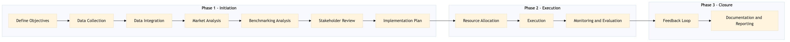

This process document outlines the steps for conducting Supplier Market Intelligence and Benchmarking within the OTA Marketing Media and Loyalty domain, focusing on both Expedia Group's OTA systems and Amex GBT / SAP Concur's TMC systems.
| Trigger | Initiation of a new market intelligence or benchmarking project by the marketing team. |
| Outcome | Successful completion of market intelligence analysis and benchmarking, leading to informed decision-making for media solutions and B2B marketing strategies. |
| Systems | Expedia Open World Partner Central Amadeus NDC Sabre GDS Travelport EVC One Key TravelAds AWS SageMaker Snowflake Kafka Salesforce Tableau SAP Concur T2 SAP Concur Expense Amex GBT Neo/Complete Amadeus GDS SAP S/4HANA International SOS Cvent Amex Corporate Card VCN SAP Analytics Cloud Workday |

Click to enlarge
| Step | Name & Pain Point | Role | System | Input | Output | KPI | Flags |
|---|---|---|---|---|---|---|---|
| 1.1 | Define Objectives Unclear or conflicting objectives | Marketing Analyst | Salesforce | Project brief, market research questions | Detailed project objectives and scope document | Objective clarity and alignment with business goals | ⚠ Exception |
| 1.2 | Data Collection Inadequate or inaccessible data | Data Analyst | AWS SageMaker, Snowflake, Kafka | Defined objectives and data sources | Collected and cleaned data sets | Data completeness and accuracy | ◆ Decision |
| 1.3 | Data Integration Data integration errors | ETL Specialist | Snowflake, Kafka | Collected data sets | Integrated and harmonized data in Snowflake | Integration success rate | ⚠ Exception |
| 1.4 | Market Analysis Lack of meaningful insights | Marketing Analyst | Tableau, Salesforce | Integrated data sets | Market analysis report and visualizations | Insight generation from data | ◆ Decision |
| 1.5 | Benchmarking Analysis Inaccurate benchmarking results | Marketing Analyst | Tableau, Salesforce | Market analysis report | Benchmarking report and recommendations | Benchmarking accuracy and relevance | ⚠ Exception |
| 1.6 | Stakeholder Review Unmet stakeholder expectations | Marketing Manager, Business Analyst | Salesforce, Email | Benchmarking report and recommendations | Approved or revised benchmarking report | Stakeholder satisfaction with analysis | ◆ Decision |
| 1.7 | Implementation Plan Infeasible or unclear plans | Project Manager | Salesforce, Confluence | Approved benchmarking report | Detailed implementation plan and timeline | Plan clarity and feasibility | ⚠ Exception |
| 1.8 | Resource Allocation Resource constraints | Project Manager, Finance Analyst | Salesforce, SAP S/4HANA | Implementation plan | Allocated resources and budget | Efficient resource utilization | ◆ Decision |
| 1.9 | Execution Execution delays or issues | Cross-functional Team | Various systems as per implementation plan | Allocated resources and budget | Executed marketing strategies and campaigns | Campaign execution rate | ⚠ Exception |
| 1.10 | Monitoring and Evaluation Inadequate monitoring tools | Marketing Analyst, Data Analyst | Tableau, Salesforce | Executed campaigns | Performance metrics and evaluation report | Campaign performance against KPIs | ◆ Decision |
| 1.11 | Feedback Loop Lack of feedback or resistance to change | Marketing Manager, Business Analyst | Salesforce, Email | Evaluation report | Feedback and adjustments to future strategies | Continuous improvement in marketing effectiveness | ⚠ Exception |
| 1.12 | Documentation and Reporting Incomplete or unclear documentation | Project Manager, Documentation Specialist | Confluence, Salesforce | All process steps and outcomes | Comprehensive documentation and final report | Document completeness and clarity | ⚠ Exception |